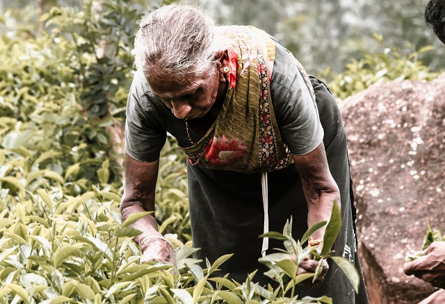

We are proud of our tea journey in the last 150 years as a country. It has become a beverage that almost every Sri Lankan consumes and the industry has made a huge contribution to our economy. However,
things are going to change with globalisation and developments in market patterns.

The problems faced in the competive market for lion tea
We have manufactured our teas using conventional processing methods for the longest time. For the past 150 years, these labour intensive manufacturing
processes have not improved significantly and this has resulted in nearly stagnant production costs.
These methods also produce conventional grades of tea that can be processed by any other country.
Other tea-producing countries such as India and Kenya have now used smarter machines to introduce processing methods that have reduced their cost of production.
the lankan tea standing
With the production of 2616 thousand metric tones of tea in China, the main tea producer in the world is China.
In 2018. China's tea plantations cover 1.86 million hectares, or around half the overall surface area of the country.
Beneath the tea. Data in Table 2 suggest that the production of tea in China has increased rapidly. The biggest tea was India,
In 2005, it became the world producer and the second largest producer of tea in the world.
The Third Best Tea
Today, with the production of 492.9 thousand metric tones of tea in 2018, the manufacturer is Kenya. When making tea
In major producing countries such as China, India and Kenya, development is rising, with Sri Lanka ranked at the top of the list.
Fourth position in performance. Moreover, it has also been obvious that the production of tea has been noted.
In Sri Lanka, stagnant.
The study of tea exports from Sri Lanka is also significant. Exports of multiple kinds, such as tea bags,
the issues of tea workers
At the bottom of Sri Lankan society, the descendants of tea plantation workers stay trapped. All of them prefer to work for a low daily wage in oppressive circumstances.
many of these womens work in this hillside. in tough conditions for little money
Staff lived in cramped shacks, without their children's toilets, drinking water, medical services or schools.
With long hours and high quotas, working conditions were very harsh.
Sri Lanka wages its tea staff more than other big tea producing nations such as China, India and Kenya, according to the Planters' Association of Ceylon.
The tea workers remain, however, mired in poverty.